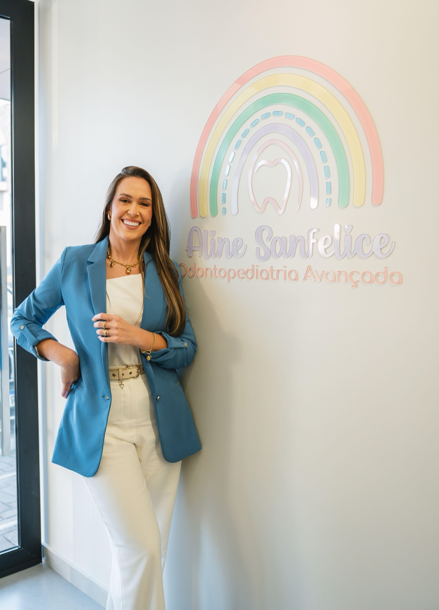
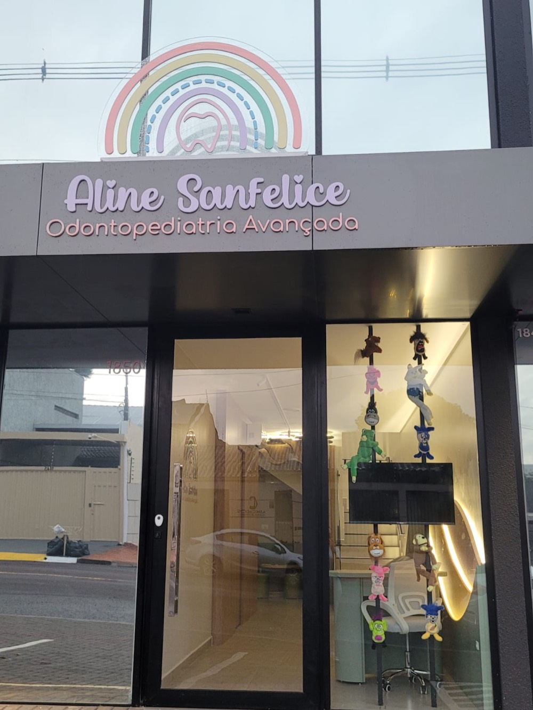

Sedação odontológicaquando indicada, após avaliação
Acessívele com estacionamento no local

Dra. Aline SanfeliceOdontopediatra · CRO-PR 22438
Primeiro ela conquista a criança. O dente vem depois.
A Dra. Aline atende crianças desde bebês. Há famílias que voltam com ela há anos, e elas costumam repetir as mesmas palavras: paciência, delicadeza, carinho.
Cada etapa é apresentada antes de acontecer. Modelos de dentes, brinquedos e muita conversa ajudam o desconhecido a deixar de assustar, e os pais acompanham tudo de perto.
“Atendo ele desde bem pequenininho, quando ainda tinha medo e chorava algumas vezes. Depois que eu conquistei a confiança dele, ele se transformou. Agora é super corajoso.”
Como é a primeira consulta
Sem pressa e sem surpresas. A criança conhece cada etapa antes de ela acontecer.
1
Primeira conversa
Pelo WhatsApp, você conta a idade da criança, o que te preocupa e como foram as experiências anteriores.
2
Conhecer o espaço
A criança chega, olha, pergunta. Brinquedos e o cantinho lúdico fazem parte da apresentação.
3
Avaliação no ritmo dela
Cada instrumento é mostrado antes de ser usado. O tempo de adaptação é o da criança.
4
Plano conversado
O tratamento é explicado com clareza, e cada decisão é tomada junto com a família.
5
Cuidado em casa
Você sai com orientações de escovação, alimentação e prevenção para o dia a dia.
Do primeiro dentinho à adolescência, sempre com avaliação individual.
Odontopediatria
Acompanhamento da saúde bucal na infância: prevenção, orientação para os pais e tratamento adequado a cada fase do desenvolvimento.
Primeira consulta e acompanhamento
Prevenção e orientação de higiene e alimentação
Tratamento de cáries e dentes sensíveis
Sedação odontológica
Um recurso para situações específicas, nunca o primeiro reflexo. Só é indicada depois de avaliação da necessidade, da idade, do histórico e da segurança, e sempre conversada com a família.
Medo intenso, uma experiência ruim no passado ou mais dificuldade com o atendimento. Algumas crianças precisam de mais tempo, previsibilidade ou um plano diferente.
Tem um cuidado diferenciado e uma atenção que não havia tido antes. Sendo mãe de criança atípica, é de profissionais como ela que precisamos: que tenham um cuidado muito além da profissão, um acolhimento. E ela tem, com certeza.
Minha filha fez um procedimento com sedação com a Dra. Aline. Foi uma experiência incrível: ela se sentiu segura, não sentiu medo. […] Todo o atendimento de forma lúdica ajuda muito!
Há anos ela acompanha meu filho, e ele ama vir na dentista dele. Paciência total com nossos pequenos.
A melhor profissional da cidade para atender crianças, principalmente as crianças TEA. Muito amor, empatia, cuidado.
Minha bebê de 2 aninhos tem má formação na esmaltação dos dentinhos; toda vez de escovar era um caos. […] Graças ao trabalho da doutora, [ela] colabora na escovação, e o sorriso está ainda mais lindo e, principalmente, saudável.
É uma reação natural ao desconhecido. A consulta começa pela aproximação: conversar, mostrar, deixar tocar. A confiança vem antes do tratamento, e o ritmo é o da criança.
O acompanhamento pode começar ainda nos primeiros anos, antes de qualquer problema. Você recebe orientações de higiene, alimentação e desenvolvimento dos dentes. O momento certo para cada criança é conversado na consulta.
Fale do dentista de forma natural e positiva, e nunca como ameaça. Se ele já teve uma experiência ruim, conte antes da consulta: isso é levado em conta desde a primeira conversa.
Não. A sedação é indicada só em situações específicas, depois de avaliação individual. Uma conversa ajuda a entender se ela faz ou não sentido para o seu filho.
Cartão de crédito, débito e pagamento por aproximação. Há opção de parcelamento; as condições são combinadas pelo WhatsApp.
Pelo WhatsApp (45) 98433-3443. O atendimento é de segunda a sexta, das 8h às 18h, com hora marcada.

Onde fica
Procure a fachada com o arco-íris no letreiro e os bichinhos de pelúcia na vitrine.
R. Fortaleza, 1850, CentroCascavel, PR · 85810-051
Segunda a sexta, 8h às 18hAtendimento com hora marcada
Estacionamento no localEntrada, vaga e banheiro acessíveis